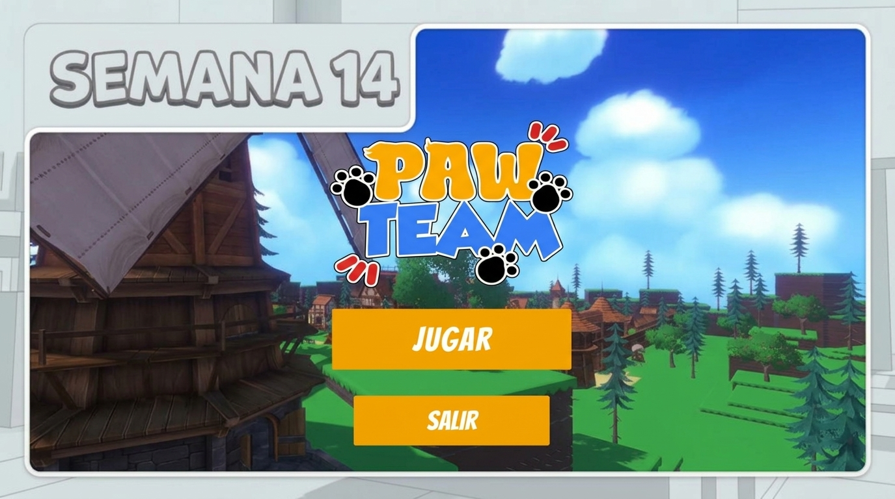
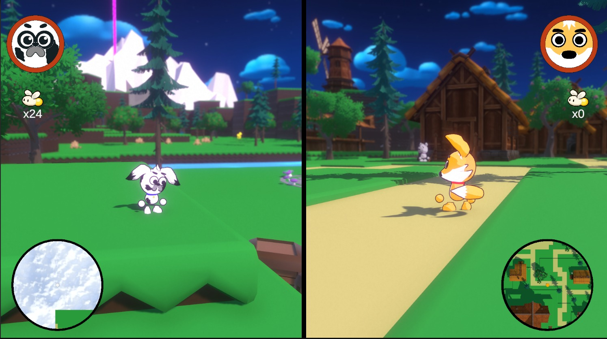

BITÁCORA DE DESARROLLO
Semana 14
Mejoras visuales, nuevos enemigos y avances en el gameplay
Durante esta semana continuamos puliendo la experiencia visual y las mecánicas de Paw Team. También incorporamos nuevos elementos de combate y avanzamos en la construcción del flujo inicial del nivel.

¿Qué queríamos lograr?
El objetivo de esta semana fue seguir acercándonos a una versión más completa del videojuego, trabajando tanto en la presentación visual como en los enemigos, las armas y la experiencia general del jugador.
Además, comenzamos a organizar el recorrido inicial del nivel, conectando la pantalla de inicio con las primeras interacciones que tendrá el jugador dentro del mundo.
Mejoras visuales con Bloom y Depth of Field
Implementamos los efectos Bloom y Depth of Field para mejorar la apariencia visual del escenario. Con estos ajustes conseguimos que los elementos cercanos tengan mayor protagonismo, mientras que los objetos a mayor distancia se perciben ligeramente desenfocados.
Esto ayuda a darle más profundidad a los escenarios y a dirigir la atención del jugador hacia los elementos importantes.

Finalización del enemigo Ferocan
Continuamos trabajando en el Ferocan hasta completar su desarrollo. En esta etapa ajustamos su comportamiento y terminamos sus respectivas animaciones, incluyendo los movimientos necesarios para realizar sus ataques.
Con esto conseguimos tener un enemigo más completo, preparado para participar en los enfrentamientos dentro del juego.
Implementación del arco
Incorporamos una nueva arma: el arco. A diferencia de los ataques cuerpo a cuerpo, esta herramienta permite atacar a los enemigos desde una mayor distancia.
Su implementación amplía las posibilidades de combate y ofrece una alternativa para enfrentar a los enemigos sin necesidad de acercarse directamente a ellos.
Actualización del menú principal
También realizamos cambios en la pantalla de inicio del videojuego. Actualizamos el fondo para mostrar diferentes partes del mapa y le dimos una apariencia más colorida, buscando que fuera más llamativa y representativa del mundo de Paw Team.
Además, incorporamos música al menú para complementar la presentación y darle una mayor identidad a esta primera pantalla.
Diseño y animación de los cuervos
Comenzamos a desarrollar un nuevo tipo de enemigo: los cuervos. Para esto, primero trabajamos en su diseño y en la creación de sus animaciones utilizando Blender.
Esta etapa nos permitió preparar el modelo y sus movimientos antes de integrarlos al videojuego.
Los cuervos dentro del juego
Después de trabajar en su diseño y animaciones, integramos los cuervos al videojuego para observar cómo se comportan dentro del escenario.
En esta parte podemos ver su apariencia durante el gameplay y los ataques que realizan contra los personajes, incorporando así una nueva amenaza para los jugadores.
Flujo inicial del gameplay
Finalmente, organizamos una primera versión del recorrido que tendrá el jugador al comenzar la experiencia. El flujo inicia en la pantalla principal, desde donde puede seleccionar la opción de jugar. Después aparece una pantalla de carga y se ingresa al nivel.
Una vez dentro, el jugador debe acercarse a un NPC e interactuar con él. Esta conversación hace parte del inicio de la historia y permite comenzar a darle contexto al recorrido. Aunque todavía falta incorporar una animación en esta parte, ya contamos con una primera estructura del flujo inicial.
Resultado de la semana
Esta semana logramos avanzar en diferentes aspectos del videojuego: mejoramos su apartado visual, completamos el enemigo Ferocan, incorporamos el arco y desarrollamos los cuervos como un nuevo tipo de enemigo. Además, conseguimos una primera versión del flujo que conecta el menú principal con el inicio del nivel.
¿Qué observamos o descubrimos?
Al integrar nuevos enemigos y armas, seguimos ampliando las posibilidades de combate. También vimos la importancia de conectar los diferentes elementos del juego para que el jugador no solo tenga mecánicas disponibles, sino que pueda avanzar por una experiencia con mayor continuidad.
El flujo inicial nos permitió identificar mejor cómo se conectan el menú, la carga del nivel y las primeras interacciones con los NPC.
¿Qué cambiaremos en la siguiente versión?
- Continuar desarrollando el flujo del gameplay e incorporar animaciones y cinemáticas para acompañar la historia.
- Terminar de pulir los ataques y movimientos de nuestros personajes.
- Seguir decorando y mejorando los escenarios del mapa.
- Dar mayor continuidad a las interacciones y al recorrido inicial del nivel.